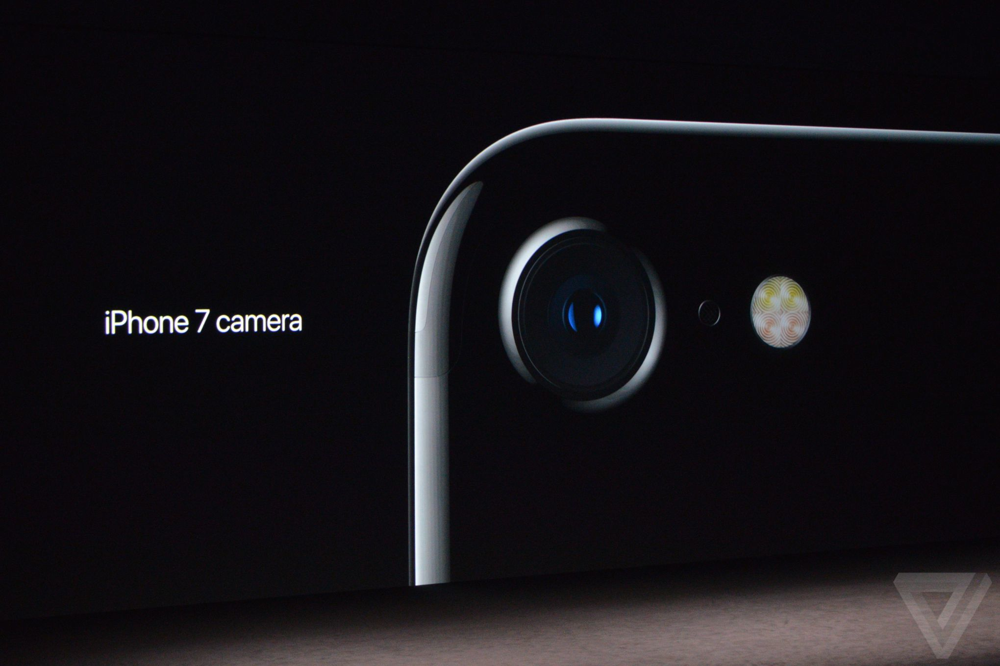
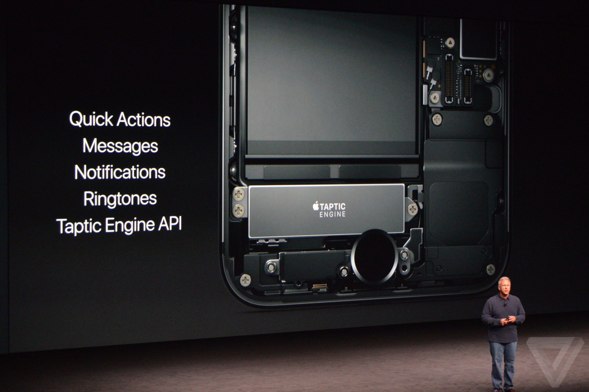
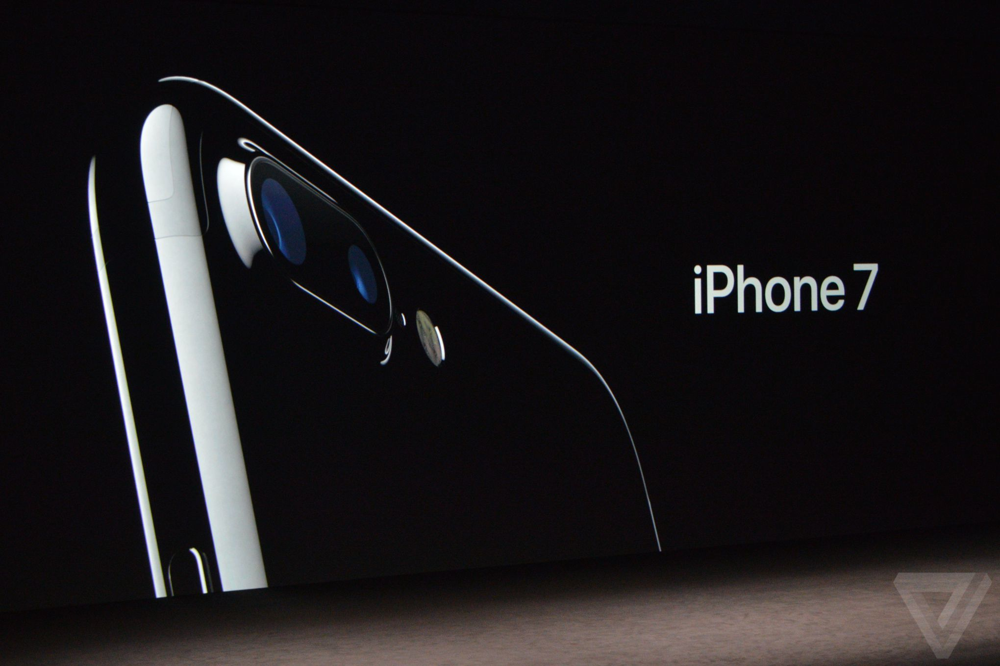

Apple vừa ra mắt chiếc iPhone 7 và iPhone 7 Plus lúc 0h ngày 8/9 (giờ VN) với hàng loạt tính năng nâng cấp đáng giá dù hầu hết những thông tin rò rỉ trước đó đều đúng.
Camera lột xác.Camera là một trong những tính năng được nâng cấp mạnh mẽ nhất đối với iPhone 7. Với khả năng chống rung quang học, khẩu độ f1.8, tiếp nhận được hơn 50% ánh sáng, ống kính 6 thành phần, 12MP, mở nhanh hơn 60%, tiết kiệm điện hơn 30%, 4 đèn LED cho hiệu quả ánh sáng cao hơn 50%, bộ ổn định hình ảnh quang học và con chip do chính Apple sản xuất. Camera trước có độ phân giải 7MP, chống rung tự động.
Nút Home vật lý đã được cải tiến. Home có bề mặt cứng hơn của iPhone 6S và vẫn có cảm biến vân tay Touch ID nhưng cảm giác nhấn thật hơn nhờ bộ rung Taptic Engine API, chống bụi chống nước. Nó cho phép truy cập Quick Actions, nhắn tin và xem thông báo nhanh.
